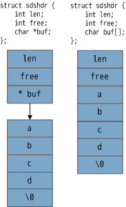

redis 数据结构 sds
sds 结构简介
sds 被称为是 Hacking String. hack 的地方就在 sds 保存了字符串的长度以及剩余空间。sds 的实现在 sds.c 中。
sds 头部的实现：
struct sdshdr {
int len;
int free;
char buf[];
};
hacking sds
倘若使用指针即 char buf，分配内存需要量两个步骤：一次分配结构体，一次分配 char buf，在是否内存的时候也需要释放两次内存：一次为 char *buf，一次为结构体内存。而用长度为 0 的字符数组可以将分配和释放内存的次数都降低为 1次，从而简化内存的管理。

另外，长度为 0 的数组即 char buf[] 不占用内存：
// char buf[] 的情况
struct sdshdr s;
printf("%d",sizeof(s));
// 8
// char *buf 的情况
struct sdshdr s;
printf("%d",sizeof(s));
// 12
redis 中涉及较多的字符串操作，譬如 APPEND 命令。相比普通的字符串，sds 获取字符串的长度以及剩余空间的复杂度都是 O(1)，前者需要 O(N).
// 返回 sdshdr.len
static inline size_t sdslen(const sds s) {
struct sdshdr *sh = (void*)(s-(sizeof(struct sdshdr)));
return sh->len;
}
// 返回 sdshdr.free
static inline size_t sdsavail(const sds s) {
struct sdshdr *sh = (void*)(s-(sizeof(struct sdshdr)));
return sh->free;
}
sds.c 中还实现了针对 sds 的字符串操作函数，譬如分配，追加，释放等，这些函数具体详细的实现读者可以自行剖析。